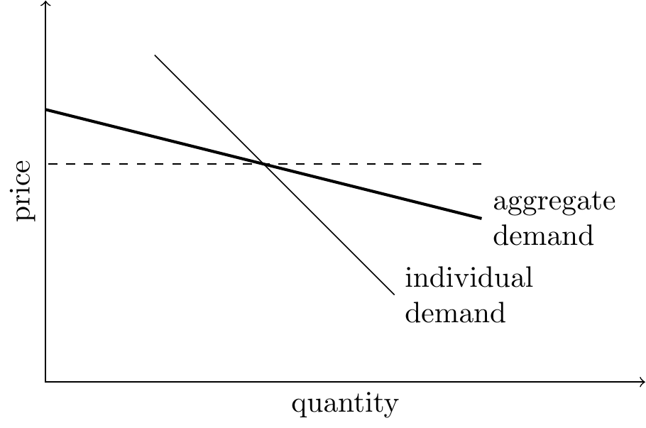
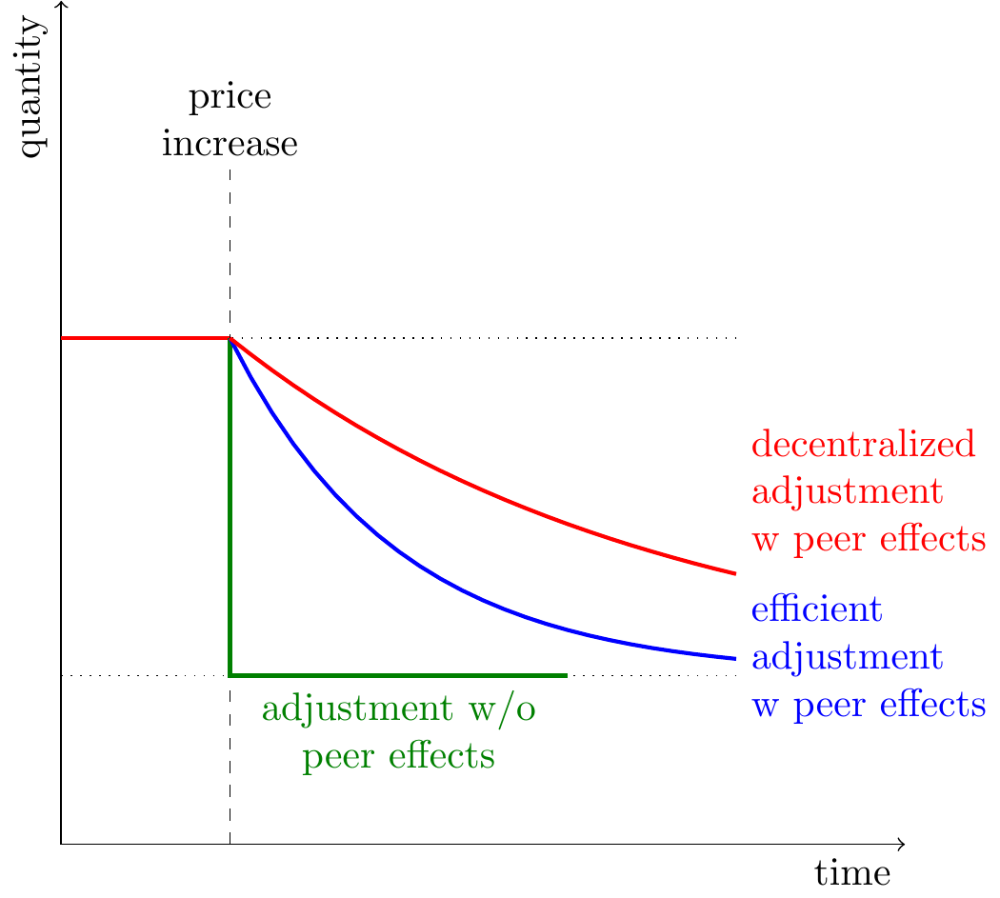
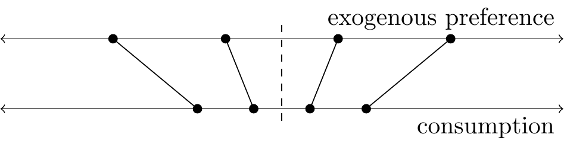
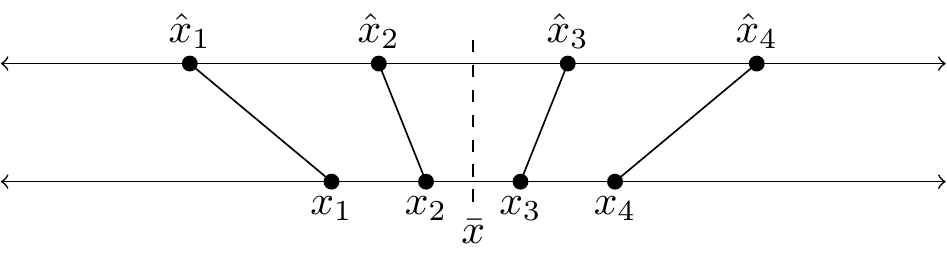
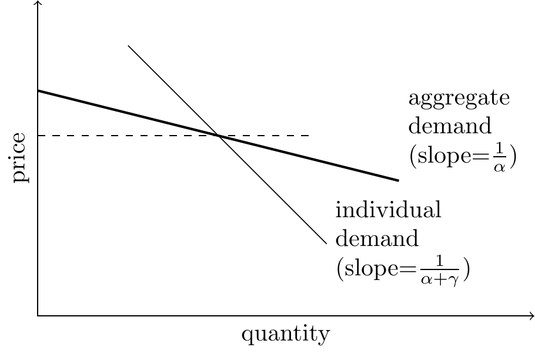
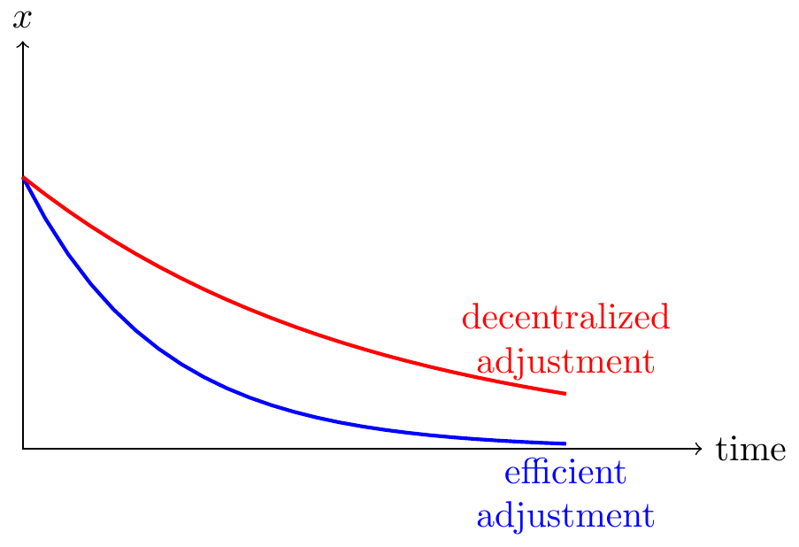
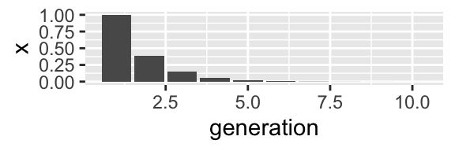

In short:1
1 First version January 23 2023. Thanks to comments and conversations with many, incl. Jon de Quidt, David Atkin, Donald Kenkel, Dmitry Taubinsky, Charlotte Paul, & Ruth Cunningham.
The majority of variation in preferences is due to the influence of peers. Peoples’ tastes reflect what they are accustomed to, either from their upbringing or from their contemporaries. Tastes for food, alcohol, tobacco, music, art, and leisure, vary much more between societies than within societies. This is a banal observation but I think when combined with standard economic analysis it has fairly radical implications for policy.
Peer influences imply that group behaviour will respond to changes in the environment with a lag. Contemporary preferences will reflect the prior environment of a group, because peer effects will cause persistence. If your society once had a reason to choose potatoes over bread then the preference for potatoes will linger after the reason has disappeared.
The slow adjustment of preferences implies welfare can be improved. Peer effects are an externality and so taxes which offset it will hasten convergence and raise welfare. This would justify taxes to discourage goods that have been recently been discovered to be unhealthy: tobacco, sugar, trans fats & saturated fats.
Summary
Most variation in preferences is due to peer effects. Around the world there is substantial variation in choices over food, clothes, education, working hours, fertility, etc., much of which does not seem to be a consequence of economic constraints, but must reflect a difference in preferences. We can decompose variation in preferences into (1) genetic, (2) shared environment (upbringing and peers), and (3) idiosyncratic differences.
The majority of the variation seems to be due to shared environment because most of the variation is between group rather than within group. I.e. we can predict most of a person’s preferences from knowing the preferences of their peers, and it’s implausible those differences are genetic. I discuss evidence further below.

Implication: aggregate demand will be more elastic than individual demand. Peer effects causes everyone to bias their behaviour towards what other people choose, as a consequence each individual’s response to changes in the environment (e.g. an increase in price) will be damped in comparison to the aggregate response.
Implication: today’s preferences reflect yesterday’s prices. If peer influence is based substantially on peers’ historical behaviour (as opposed to being forward-looking) this will tend to retard the adjustment of decisions to circumstances, so that a society’s set of decisions at any given point in time will reflect the prior history of circumstances faced by that society.

Implication: adjustment is inefficient. Peer effects mean that consumption decisions have an externality: when you increase your consumption it will cause others to increase theirs. In the long-run this will not cause consumption to be too-high or too-low, but it will make adjustment to a change in circumstances slower than would be efficient.
Implication for policy: hasten adjustment. Everyone could be made better off with a tax to correct that externality and hasten adjustment to the new equilibrium. When we discover new information about the health effects of some good (tobacco, sugar, saturated fats), peer effects will cause an inefficiently slow adjustment of consumption, and everyone would be made better off by a temporary tax to hasten that adjustment process.
A Simple Model of Peer Effects
In short: With peer effects the aggregate demand curve will be more elastic than the individual demand curve. Additionally long-run aggregate demand will be more elastic than short-run aggregate demand.
I give a fuller derivation of this model below, here I just state the setup and the key results.

Setup: Suppose each person has a pre-existing ideal level of consumption (of alcohol, sugar, tobacco, etc.), but they additionally get disutility from departing from the average level of consumption among their peers. Assume the reference-point is the lagged level of consumption among peers.
Implications:
Long-run average consumption will be independent of peer effects. In the long-run equilibrium peer effects will not systematically bias consumption up or down: the average consumption will be equal to the average pre-existing preference.
Aggregate elasticity will be higher than individual elasticity. Society as a whole will be more sensitive to changes in price (or changes in information) than each individual will be.
Long-run aggregate elasticity will be higher than short-run aggregate elasticity. When the price changes (or information changes) then each individual will respond but their response will be retarded due to peer effects from historical levels of consumption. Thus aggregate consumption will take some time to fully reflect changes in the environment.
Aggregate demand will respond inefficiently slowly. When the price changes then aggregate consumption will gradually adjust, but that rate of adjustment will be slower than the utilitarian (welfare-maximizing) rate of adjustment. The implication is not that we should tax unhealthy goods, but that we should tax goods which we have recently learned to be unhealthy, to help quicken the convergence. When we discover negative effects of saturated fat, tobacco, sugar, then we should tax people to bring them quickly to the new equilibrium (and when when we learn things are surprisingly healthy then we should subsidize them).
Biases will be magnified. If there is a bias in decision-making, e.g. myopia regarding health effects, then the aggregate effect of that bias will be larger than the individual effect. Thus a tax calibrated to the individual effects of myopia would be too small.
Variation in consumption will be higher than optimal. When someone shifts their consumption farther from the mean they have a negative externality on everyone else, and so welfare would be improved if everyone conformed somewhat more than they do. This implication was surprising to me but seems to follow from the model.
Relation to Literature on Health Taxes
The key point of this note is that the existence of peer effects would justify a tax on unhealthy goods, independent of any direct externalities or internalities from consumption, along a transition path when we learn new information about that good. I haven’t found discussion of this point in the economics literature on health taxation. The literature in public health often seems to make this argument implicitly but I think it deserves to be made much more clearly.
Most countries have substantial restriction on unhealthy goods (“sin taxes”). Most countries have substantial taxes on tobacco and alcohol, outlaw many drugs, carcinogens, trans fats, and many countries are planning to introduce a tax on sugar.
The economics literature is not in consensus about the appropriate taxation of unhealthy goods. E.g. DeCicca (2022) reviews the evidence on tobacco taxes and conclude that they are higher than would be justified by the purely economic externalities, e.g. through healthcare (“evidence on the magnitude of the externalities does not support current tax levels.”) They then consider the evidence for “internalities,” i.e. myopic decision-making by consumers, and say that the evidence and theoretical framework is too sparse to draw a conclusion (“the empirical evidence on the magnitudes of the internalities from smoking is surprisingly thin.”)
Discussion of optimal taxation rarely discusses peer effects. DeCicca et al. (2022) mention the existence of an empirical literature on the peer effects on smoking, but don’t discuss the findings, or whether it would have implications for setting taxes.
Kenkel et al. (2002) calibrate a model of rational addiction with peer effects. They show that peer effects will tend to magnify distortions due to other externalities, and so increase the size of the efficient tax for a given individual elasticity. In their model peer effects only magnify existing distortions, they do not justify a tax by themselves. However that paper does not discuss the role of adjustment to new information (the focus of this note), a case in which peer effects will cause inefficiencies even without other externalities.
Allcott et al. (2020) argue for a 2c/oz tax on soda based on (1) a 1c/oz externality due to healthcare costs, and (2) a 1c/oz “internality” due to peoples’ myopic decision-making. They do not (I believe) discuss a peer-effect justification for taxation, which would constitute an additional separate justification for a soda or sugar tax.
The Public Health literature discusses peer effects, but it’s unclear what role they play in setting policy. Since the 1990s the Public Health literature has put a lot of emphasis on “community health” or “population health” interventions, in part due to the perceived importance of social norms, AKA peer effects. However this literature rarely includes an explicit calculation of costs and benefits to justify a given magnitude of intervention. As a consequence it’s often unclear whether peer effects are thought to be relevant due to magnifying some other distortion (e.g. a fiscal externality or myopic decision-making), or due to retarding the aggregate adjustment to new information. However I believe the informal reasoning used in public health essentially appeals to the argument I am making: they argue that peoples’ health would be substantially better off with small lifestyle changes, but they are held back by social norms.2
2 A highly-cited paper by epidemiologist Geoffrey Rose (2001) argues that public health interventions should focus on community-wide interventions rather than just on high-risk individuals, in part because of peer influences. He says “Eating, smoking, exercise and all our other life-style characteristics are constrained by social norms. If we try to eat differently from our friends it will not only be inconvenient, but we risk being regarded as cranks or hypochondriacs.”
Application to Tobacco Taxes
Consumption of tobacco declined very slowly after the health effects were discovered. Deaths from lung cancer increased by a factor of 10 between 1925 and 1950, and by 1950 it was fairly clear that smoking was the overwhelming cause.3 Rates of smoking peaked around 1960 and have been declining by about 5%/year ever since, and are now about 1/3 of their peak. Thus most of the deaths from smoking have been among people who started smoking after it became clear that smoking caused cancer.
3 Doll and Bradford Hill (1950)
The decline in smoking was primarily due to a change in beliefs. DeCicca et al. (2022) document that in the US the tax rates on cigarettes stayed relatively constant between 1960 and 2022, and they say most studies estimate that cigarette demand is fairly insensitive to price (estimates of elasticity between -0.05 and -0.35). They also find relatively weak effects from other regulations, e.g. bans on advertising, bans on smoking in public places.
Thus the large aggregate decline in smoking seems to have been driven by a change in tastes, which presumably was downstream from a change in beliefs about health effects. That change in tastes has propagated very slowly presumably due to peer effects (AKA “norms” or “culture”).
In retrospect the decline was inefficiently slow: multiple generations got a taste for tobacco from their peers and their parents, and then found the habit difficult to shake. This implies an externality from smoking. In retrospect welfare would’ve been higher if we’d had high taxes in the 1960s to hasten the decline of smoking, and indeed in a simplified model it could’ve been Pareto improving: each person would lose utility from smoking less, but offset by a gain from their peers smoking less.
Suppose we come to believe that saturated fat or sugar has a comparable health effect to tobacco. Then in the long-run we expect their use will decline, but it might take 50 years for that to happen. Thus it would be efficient to apply a temporary tax to correct the peer-effect externality.
Evidence on Peer Effects
This section has a quick sketch of lines of evidence for the importance of peer effects in consumption decisions, but it is not as well organized as it could be.
Adult preferences reflect childhood exposure. Whether you prefer rice, bread, or potatoes; prefer olive oil or butter; prefer shoes on or off; prefer country or rock n roll; is mostly determined by which one you were brought up with. The cleanest evidence I know of is Atkin (2013) and Atkin (2015) who shows that Indians choice of food is highly sensitive to upbringing: those who are brought up eating rice prefer rice, those who are brough up eating wheat prefer wheat, and the effects are so strong that they contribute substantially to malnutrition.
There is more between-society variation in consumption than can be rationalized by between-society variation in prices. Northerners use butter, southerners use olive oil.
Changes in average consumption are primarily due to between-cohort changes, rather than within-cohort. E.g. DeCicca (2022) says that the decline in smoking in the 20th century was primarily due to lower rates of uptake by each new generation rather than an acceleration of the decline in smoking by existing generations.4
4 Note that this pattern could be rationalized either by (1) within-cohort peer effects, or (2) within-person intertemporal complementarities. However note that the existence of within-person intetemporal complementarities will tend to increase the persistence of contemporaneous peer effects.
Consumption is sensitive to changes in peer behaviour. If your friends cut back on smoking, drinking, and eating donuts, you’ll likely cut back too.
Long-run effects on culture
Nunn (2020) gives many examples of contemporary cultural traits which appear to reflect differences in historical environments that no longer exist today.
Becker (2020): There are large contemporary differences in culture between societies which live in lands well-suited for pastoralism vs agriculture.
Alesina et al. (2011): “the descendants of societies that traditionally practiced plough agriculture, today have lower rates of female participation in the workplace, in politics, and in entrepreneurial activities, as well as a greater prevalence of attitudes favoring gender inequality.”
However these types of argument are notoriously difficult to evaluate: identification requires assuming many other causal channels are zero, and researchers typically examine a lot of data before finding an association that could be publishable.
Evidence from Migration
Alesina and Guiliano (2013) say
“when immigrants move to a place with different institutions, overwhelmingly their cultural values change gradually, if ever, but rarely within two generations.
Evidence from Heritability
Twin studies show fairly high heritability of health behaviors. I give below some very rough estimates for the contribution of shared environment to adult health behaviors from twin studies. The shared environment estimate comes from the degree of correlation between fraternal twins (precisely: the excess relative to 50% of the correlation between identical twins).5
5 Vink et al. (2015) Heritability of smoking initiation and nicotine dependence – study of Dutch twins. They cite other studies with similar decomposition for smoking inititation. “individual differences in smoking initiation were explained by genetic (44%), shared environmental (51%) and unique environmental (5%).”
Verhulst (2015) The heritability of alcohol use disorders: a meta-analysis of twin and adoption studies: “The best-fit estimate of the heritability of AUD was 0.49 [95% confidence interval (CI) 0.43–0.53], and the proportion of shared environmental variance was 0.10 (95% CI 0.03–0.16).”
Maes (1997) Genetic and Environmental Factors in Relative Body Weight and Human Adiposity: “genetic factors explain 50 to 90% of the variance in BMI”. They don’t seem to give a preferred estimate for shared environment contribution, I’m going to say 10% based on skimming this and other papers.
| heritability (\(h^2\)) | shared env (\(c^2\)) | unique env (\(e^2\)) | |
|---|---|---|---|
| smoking initiation | 45% | 50% | 5% |
| alcohol use disorder | 50% | 10% | 40% |
| obesity | 70% | 10% | 20% |
However twin studies under-state the importance of peer effects. The “shared environment” will pick up the influence of parents and mutual friends of siblings, however the “unique environment” will also include the peer effects from each sibling’s idiosyncratic friendships.
More importantly, twin studies decompose the variance in behaviours for a given population (usually a single country) at a particular time. However for most of these behaviors the within-society variance is small relative to the between-society variance. Thus twin decompositions of variance will only pick up the contribution of local peer effects (your family or neighborhood), not society-wide peer effects.
Relation with Other Economics Literature
Economics literature on social norms mostly treats preferences as fixed. There is a lot of economic literature on “social norms”, and is applied to behaviors like generosity, bargaining, fertility, & medical treatment.6 However I believe the majority of this literature treats preferences as fixed so that norms are modelled as multiple equilibria (Schelling (1978), Axelrod (1986), Mackie (1996)), or with a raw preference to conform (e.g. Young, 2005), or a raw preference to sanction those who deviate from a norm. I model norms as essentially absorption of preferences. The key conceptual distinction is how your behavior changes when you change peer groups: purely conventional norms ought to adapt immediately – you drive on the other side of the road when you go to another country. But acquired preferences should remain: you still like the music, the food, the literature, of your home country.
6 Young (2005) is a good review.
Relation with the Becker-Murphy (1988) model of addiction. Becker and Murphy claim that consumption of addictive goods (tobacco, heroin) is consistent with rational choice given that there is an inter-temporal complementarity: consuming at time \(t\) increases the value of consuming at \(t+1\). They say there’s evidence that people are clear-sighted about the complementarity: when people anticipate a cigarette tax in the future then they smoke less now.
Becker-Murphy is about within-person complementarities while the model in this note is about between-person complementarities. The between-person complementarities generate an externality, and therefore (unlike in Becker-Murphy) a reason to introduce a tax.
In addition it seems likely that a person’s earliest choices are partly naive about long-term effects: when a child or adolescent eats, smokes, or drinks alcohol, they are unlikely to fully anticipate the long-run consequences on their health or on their future tastes. If this is true this would be an additional reason (independent of peer effects) to tax or restrict youthful consumption.7
7 Becker (1992) is a long essay about habits and addiction that acknowledges the existence of acquired preferences though doesn’t seem to pursue the implications. Becker says “[a]ltruistic parents … may refrain from smoking even when that gives them much pleasure because their smoking raises the likelihood that the children will smoke.”.
Discussion
Concrete implications: (1) If you brought up a child in a world where nobody smoked, drank, or ate twinkies, then they would not lose much pleasure but they would live a substantially longer life – a kid who never acquires a sweet tooth will live a life both happy and healthy. (2) If we had banned cigarettes in the 1960s then one generation of smokers would have been unhappy but each subsequent generation would have grown up with no cravings or desire to smoke and substantially better health (smoking reduces life expectancy by 5 years).
Peer effects due to rational imitation. It can be rational to imitate what you see others do because their choices are informative about common costs and benefits (AKA “rational herding”, Banerjee (1992)).
However a basic model of rational herding would not generate the type of peer effects we see in practice. A pure informational peer effect implies that you should look at the behaviour of all peers not just nearby ones, e.g. you should be influenced by the worldwide participation in smoking instead of just in your local group. Also you should be most influenced by those who you believe to have the most information, e.g. the smoking rate among doctors or epidemiologists. In contrast peoples’ choices seem most influenced by their direct proximate peers.
If peer effects are due to rational herding then aggregate responses to changes in the environment will be sensitive to the nature of the change. E.g. when all prices are common knowledge then the aggregate and individual responses to a change will be the same. However when each person has some independent signal about the health effects of smoking then the aggregate effect of information can be far higher than the individual change.
Peer effects due to environmental spillovers. Peer effects in consumption can exist due to increasing returns in production: e.g. if most of your peers prefer X over Y then most shops will sell only X, and most social practices will accommodate X, make you more likely to consume X. If you move to a town where the majority smoke, drink, and eat unhealthy foods, then it becomes more difficult to live as a non-smoker, non-drinker, and healthy eater.8
8 Some theory and data from media markets is discussed in Anderson and Waldfogel (2005). There must be a literature on consumption spillovers in other markets but I haven’t seen it.
Peer effects due to a hardwired desire. Evolution may have given us a hard-wired preference to do what we observe others doing. Other animals seem to imitate each other: e.g. bird-song and food choices seem to be heavily influenced by observation of others.9 The reason we tend to influenced by peers might be for good informational reasons, as discussed above it’s generally reasonable to do what we observe others do. But these imitative instincts might be hard-wired, which would explain why we are influenced far more by near peers than by far peers. This is the basic perspective of evolutionary psychology: Tooby and Cosmides (1992) argue that humans are built with cognitive architecture that is adapative in the evolutionary environment although often maladaptive in the modern environment.
9 Galef (1998) discusses history and evidence for imitation. He seems to say that there’s been a lot of conceptual confusion about the definition of imitation and the evidence sufficient to demonstrate it: “[i]t is somewhat surprising that almost 100 years of study of social learning in animals has failed to produce a clear answer to the question of whether animals can in fact learn to do an act from seeing it done,”. There is also good discussion in the Wikipedia page for social learning in animals.
It mostly doesn’t matter why we have peer effects. Below I discuss some different reasons why our choices might be attracted towards the choices of our peers. However for some questions it doesn’t matter what the cause is: if we can measure the slope of the individual and aggregate demand curves then we can (1) make predictions about the effect of interventions; and (2) measure the welfare effect of different policies (using the area under the demand curve). This is less true for informational peer effects, in which case the effect of a change in environment will depend on whether it is common knowledge, and surplus cannot be identified with the area under the demand curve.
Q: How do peer effects interact with other externalities? Suppose there’s a $1 externality from consuming a good, then should we correct that with a $1 tax, given that we know the individual and aggregate elasticities will be different? There’s an argument that the tax should be larger than $1, because when you increase your consumption it will cause everyone else to increase their consumption too, so you cause more than $1 of harm.
Models
Summary of Models
I describe three models of peer effects, each an extension of the last.
Static model. Implies (1) aggregate elasticity greater than individual elasticity; (2) decentralized decision-making will cause too much variation in behaviour relative to optimal.
Two-generation model. Suppose the second generation wishes to stay close to the first generation’s consumption. Then the first generation imposes an externality on the second generation, and they will fail to respond to anticipated future changes in price (or information).
Infinite generation model. We can compare the rate of adjustment chosen by agents (ignoring their externality on future generations) and the efficient rate of adjustment, and therefore the appropriate tax to restore efficiency.
To add:
An overlapping generations model.
A fixed-cost model. I believe that this peer-effects model is isomorphic to a model with spillovers due to production with fixed costs, i.e. a Hotelling monopolist who must choose a point on a line, as in Anderson and Waldfogel (2005). However I would like to confirm this.
Matrix of effects. I think you can characterize the theory with two derivatives: the externality and the strategic complementarity. I think it would be useful to give examples of the 9 permutations (pos/zero/negative; pos/zero/negative).
Model: Static Peer Effects
Summary. Suppose you buy \(x_i\) at price \(p\), and utility depends both on distance from ideal-point, \(\hat{x}_i\) and distance from avg level of consumption, \(\bar{x}\). Then we’ll see that:
Aggregate price elasticity will be higher than individual price elasticity because when one person moves it gives everyone else a reason to move.
Average consumption is the same comparing social planner to decentralized.
Welfare-optimal consumption would be more compressed then decentralized consumption, because when we inflict an externality whenever we depart from the mean.
Average consumption moves slowly. Suppose everyone’s ideal points changes due to new information about health but they take last period’s mean consumption as the reference point. Then the society’s consumption will not adjust all the way to the new equilibrium.

Consumption with spillovers. Suppose you choose your level of consumption, \(x_i\), and utility depends both on distance from ideal-point and distance from avg level of consumption: \[u_i(x_i) = - \frac{\alpha}{2}{\utt{(x_i-\hat{x}_i)}{distance from}{ideal point}}^2 -\frac{\gamma}{2}{\utt{(x_i-\bar{x})}{distance from}{popn mean}}^2 - px_i. \]
We get optimal consumption, a function of ideal-point, avg consumption, and price: \[\utt{x_i^*}{utility-maximizing}{consumption} = \frac{\alpha}{\alpha+\gamma}\hat{x}_i + \frac{\gamma}{\alpha+\gamma}\bar{x} - \frac{1}{\alpha+\gamma}p. \]
We get average consumption (\(\bar{x}=\frac{1}{n}\sum x_i^*\)): \[\begin{aligned} \bar{x} &= \frac{\alpha}{\alpha+\gamma}\frac{1}{n}\sum \hat{x}_i + \frac{\gamma}{\alpha+\gamma}\bar{x} - \frac{1}{\alpha+\gamma}p \\ &= \utt{\frac{1}{n}\sum \hat{x}_i}{avg ideal}{point}- \frac{1}{\alpha}p. \end{aligned} \]
Observations:

- Average consumption will be more price-sensitive than individual consumption (\(\frac{1}{\alpha}>\frac{1}{\alpha+\gamma}\)).
- The average level of consumption is independent of the strength of spillovers (\(\gamma\)): spillovers just compress the variance, they don’t change the average level of consumption.
- Suppose your utility depends on prior aggregate consumption, then you get slow convergence to equilibrium (I derive a dynamic model below).
Finally we derive welfare-maximizing consumption: \[U = \sum_i u_i(x_i) = \sum_i\left( - \frac{\alpha}{2}(x_i-\hat{x}_i)^2 -\frac{\gamma}{2}(x_i-\frac{1}{n}\sum_jx_j)^2 - px_i\right) \]
The first-order condition for \(x_i\) wil be: \[\frac{dU}{dx_i} = - \utt{\alpha(x_i-\hat{x}_i)}{MC of departing}{from ideal point} -\utt{\gamma(x_i-\bar{x})}{MC of departing}{from avg} - p +\utt{\sum_j\frac{1}{n}\gamma(x_j-\bar{x})}{marginal peer externality}{on others}=0 \]
So we have: \[\begin{aligned} \utt{x_i^*}{welfare-maximizing}{consumption for $i$} &= \frac{\alpha}{\alpha+2\gamma}\hat{x}_i + \frac{2\gamma}{\alpha+2\gamma}\bar{x} - \frac{1}{\alpha+2\gamma}p.\\ \utt{\bar{x}^*}{avg welfare-max}{consumption} &= \frac{1}{n}\sum_i\hat{x}_i-\frac{1}{\alpha}p. \end{aligned} \]
Observations:
- The average consumption is the same, whether decentralized or welfare-maximizing, but with welfare-maximizing consumption everyone has moved closer to the mean.
Q: adding direct externalities? Suppose each unit of consumption inflicts $1 non-peer externality on others, e.g. smog, second-hand smoke, congestion, etc. Without peer effects then a $1 tax would appropriately correct for this. Would the efficient tax also be $1 in this model?
Extension: Direct Externalities
Now we will add a direct externality cost, e.g. representing second-hand smoke or fiscal externality (I believe the results would be the same for an internality, e.g. myopic consumption choice). We will simplify the utility function in some other ways: everyone has the same ideal-point (at zero), and we ignore price:
\[u_i = -\utt{x_i^2}{everyone's ideal}{point is zero} - \utt{\frac{\gamma}{2}(x_i-\bar{x})^2}{peer}{effects} - \utt{\theta \bar{x}}{direct}{externality}. \]
If there were no peer effects then everyone would simply set \(x_i=0\), but the welfare-maximizing choice would be to set \(x_i=\theta\), at which point the marginal personal cost of increasing consumption is equal to the marginal externality.
With peer effects the decentralized choice of \(x_i\) will ignore the externality and will simply bias their choice of \(x_i\) towards the population mean: \[x_i^* = \frac{\gamma}{\gamma+1}\bar{x}.\]
The unique equilibrium will be at \(\bar{x}=0\), independent of the strength of peer effects.
Now we can derive the welfare-maximizing choice of \(x_i\) with peer effects: \[ \begin{aligned} U &= \frac{1}{2}\sum_i x_i^2 - \sum_i \frac{\gamma}{2}(x_i-\bar{x})^2 - \theta \sum_i x_i \\ \frac{dU}{dx_i} &= \utt{x_i}{marginal cost}{of departing from 0} - \utt{\gamma (x_i-\bar{x})}{marginal cost}{of departing from avg} + \utt{\sum_j \frac{1}{n}\gamma (x_j-\bar{x})}{marginal peer harm}{to others} \end{aligned} \] The third term above (“marginal peer harm to others”) will always be equal to zero (it simplifies to \(\gamma(\bar{x}-\bar{x})\)). T
\[\begin{aligned} - \utt{\theta}{marginal}{externality} =0 \\ &= x_i - \gamma (x_i-\bar{x}) - \theta = 0 \\ x_i &= \frac{-\gamma\bar{x}+\theta}{1-\gamma} \\ x_i &= \ut{\theta}{externality} + \utt{(\frac{\gamma}{1-\gamma})(\theta-\bar{x})}{pull up}{rest of population} \\ \end{aligned} \]
Observations:
- In equilibrium we can set \(x_i=\bar{x}\) and we will have \(x_i=\theta\), i.e. the welfare-maximizing choice is independent of the strength of peer effects, because they’ll all be zero whatever value you choose.
- However if we hold fixed everyone else’s choice (take \(\bar{x}\) as given), then your choice effectively has two externalities: (1) the direct externality \(\theta\), (2) the .
Model: peer effects with two generations
For the dynamic models I assume peer effects operate solely through the prior generation’s actions: i.e. there’s some cost of departing from what your ancestors do. I assume there are no peer effects within a generation, and so can treat each generation as having just one agent.
Two generation model. Suppose the second generation gets disutility from departing from the first generation’s level of consumption (“habituation”): \[ \begin{aligned} U(x_1,x_2) &= u_1 + \beta u_2 \\ u_1(x_1) &= \utt{(x_1-\hat{x}_1)^2}{deviation}{from ideal} \\ u_2(x_1,x_2) &= \utt{(x_2-\hat{x}_2)^2}{deviation}{from ideal} + \gamma \ut{(x_2-x_1)^2}{habitutation}\\ \end{aligned} \]
Results:
- The decentralized solution is inefficient. The first generation doesn’t care about the second generation, & so hurts the second generation.
- The centralized solution would alter first generation’s consumption. We push the first generation a bit towards the second generation’s ideal-point. If we have a perfect ability to tax and rebate then we can implement the centralized solution with a tax.
- Roughly: efficient tax would bring you 1/3 of the way towards long-run ideal point. Suppose the half-life of adjustment is 1 generation (\(\gamma=1\)) and there is no discounting (\(\beta=1\)). Then the first generation consumption should be 1/3 of the way towards the long-term ideal point.
Decentralized solution. The first generation just chooses their ideal point, the second generation is somewhere between the habituation point and their own ideal point. If \(\gamma=1\) then they’re half-way, meaning the half-life of adjustment is one generation.
\[\begin{aligned} x_1 &= \hat{x}_1\\ x_2 &= \hat{x}_1\frac{\gamma}{1+\gamma}+ \hat{x}_2\frac{1}{1+\gamma} \end{aligned}\]Centralized solution. We now adjust the first-generation consumption towards the second-generation’s ideal point (derivation below):
\[\begin{aligned} x_1 &= \hat{x}_1\frac{1+\gamma}{1+\gamma+\gamma\beta}+ \hat{x}_2 \frac{\gamma\beta}{1+\gamma+\gamma\beta}\\ x_2 &= \hat{x}_1\frac{\gamma}{1+\gamma+\gamma\beta}+ \hat{x}_2\frac{1+\gamma\beta}{1+\gamma+\gamma\beta} \end{aligned}\]Observations:
- If no spillovers (\(\gamma=0\)) then \(x_1=\hat{x}_1\), \(x_2=\hat{x}_2\).
- If we don’t care about the future (\(\beta=0\)) then we get the decentralized solution again.
Derivation:
\[ \begin{aligned} \frac{dU}{dx_1} &= (x_1 - \hat{x}_1) - \gamma\beta(x_2-x_1) = 0 \\ x_1 &= \frac{\hat{x}_1+\gamma\beta x_2}{1+\gamma\beta} \\ \frac{dU}{dx_2} &= (x_2 - \hat{x}_2) + \gamma(x_2-x_1) = 0 \\ x_2 &= \frac{\hat{x}_2+\gamma x_1}{1+\gamma} \\ &= \frac{\hat{x}_2+\gamma \frac{\hat{x}_1+\gamma\beta x_2}{1+\gamma\beta}}{1+\gamma} \\ &= \hat{x}_2\frac{1}{1+\gamma} + \hat{x_1}\frac{\gamma}{(1+\gamma)(1+\gamma\beta)} + x_2\frac{\gamma^2\beta}{(1+\gamma)(1+\gamma\beta)} \\ x_2\frac{(1+\gamma)(1+\gamma\beta)-\gamma^2\beta}{(1+\gamma)(1+\gamma\beta)} &= \hat{x}_2\frac{1}{1+\gamma} + \hat{x_1}\frac{\gamma}{(1+\gamma)(1+\gamma\beta)} \\ x_2 (1+\gamma+\gamma\beta) &= \hat{x}_2(1+\gamma\beta)+\hat{x}_1\gamma \\ x_2 &= \hat{x}_2\frac{1+\gamma\beta}{1+\gamma+\gamma\beta} + \hat{x}_1\frac{\gamma}{1+\gamma+\gamma\beta} \\ x_1 &= \hat{x}_1\left(\frac{1}{1+\gamma\beta}+\frac{\gamma^2\beta}{(1+\gamma\beta)(1+\gamma+\gamma\beta)}\right) + \hat{x}_2 \frac{\gamma\beta}{1+\gamma\beta}\frac{1+\gamma\beta}{1+\gamma+\gamma\beta}\\ &= \hat{x}_1\frac{1+\gamma}{1+\gamma+\gamma\beta}+ \hat{x}_2 \frac{\gamma\beta}{1+\gamma+\gamma\beta} \end{aligned} \]
Model: peer effects with infinite generations

We model an infinite series of agents. Each has an ideal-point of zero, but pays some adjustment cost for departing from the prior level of consumption (\(x_{t-1}\)). Given some starting point (\(x_0>0\)) we wish to know how rapidly consumption will converge to its long-run equilibrium.
\[\begin{aligned} \utt{u_t}{agent $t$}{utility} &= -\ut{x_{t}^2}{cost} - \utt{\gamma(x_{t}-x_{t-1})^2}{adjustment}{cost} \\ \utt{U}{social}{welfare} &= -\sum_{t=1}^\infty \beta^t u_t \end{aligned}\]Each agent individually will simply bias their consumption towards last period’s consumption, and so the convergence factor will be simply \(\frac{\gamma}{\gamma+1}\): \[x_t=\frac{\gamma}{\gamma+1}x_{t-1}.\]
However when maximizing social welfare we also need to take into account the effect on future utility. By taking the first-order condition with respect to \(x_t\) we can derive a Euler-equation relationship between \(x_{t-1}\), \(x_t\), and \(x_{t+1}\):
\[\begin{aligned} \frac{dU}{dx_t} &= \gamma\beta^t (x_t-x_{t-1}) - \gamma\beta^{t+1}(x_{t+1}-x_t)+\beta^t x_t =0 \\ &= (\gamma+\gamma\beta+1)x_t -\gamma x_{t-1}-\gamma\beta x_{t+1}\\ x_t &= x_{t-1}\frac{\gamma}{\gamma+\gamma\beta+1} + x_{t+1}\frac{\gamma\beta}{\gamma+\gamma\beta+1} \end{aligned}\]If we conjecture exponential convergence, meaning \(x_{t+1}=\theta x_t\), we can solve for the convergence factor \(\theta\): \[ \begin{aligned} x_t &= \theta^{-1}x_t \frac{\gamma}{\gamma+\gamma\beta+1} + \theta x_t\frac{\gamma\beta}{\gamma+\gamma\beta+1} \\ \frac{\gamma+\gamma\beta+1}{\gamma} &= \theta^{-1}+\theta\beta \\ \theta^2\ut{\beta}{a} -\theta \ut{\frac{\gamma+\gamma\beta+1}{\gamma}}{b} +\ut{1}{c} &= 0 \\ \end{aligned} \]
Applying the quadratic formula we get a solution for \(\theta\): \[\begin{aligned} \theta &=\frac{-b\pm\sqrt{b^2-4ac}}{2a}\\ &= \frac{-\frac{\gamma+\gamma\beta+1}{\gamma}\pm\sqrt{\frac{\gamma+\gamma\beta+1}{\gamma}^2-4\beta}}{2\beta} \end{aligned} \]
Observations:

The solution seems to be irreducibly quadratic. If \(\beta=1\) then we can get a slightly simpler expression for the relationship between \(\theta\) and \(\gamma\): \[\theta^2 -\theta\frac{2\gamma+1}{\gamma}+1=0\] \[\theta = \frac{\frac{2\gamma+1}{\gamma}\pm\sqrt{\left(\frac{2\gamma+1}{\gamma}\right)^2-4}}{2}\]
If \(\beta=1\) (no discounting) and \(\gamma=1\) (habituation and ideal-point are equally strong):
Decentralized convergence: will not be forward-looking, and so each period will be half-way between prior and the long-run equilibrium: \(\frac{x_{t+1}}{x_t}=0.5\).
Centralized convergence: \[\theta = \frac{3\pm\sqrt{3^2-4}}{2}=\frac{3}{2}\pm\frac{\sqrt{5}}{2} = (2.618, 0.381966) \]
We choose the root that is below 1 (the other root would be explosive), and so \(\frac{x_{t+1}}{x_t}=\theta\simeq 0.38\), i.e. socially optimal convergence will be only somewhat faster than decentralized convergence in this case. If we add time-discounting I believe the difference between the two rates of convergence will get smaller.
If \(\beta=0\) (infinite discounting) then \(\theta=\frac{\gamma}{\gamma+1}\), i.e. the centralized solution is the same as the decentralized solution, because we do not care about future generations.
If \(\beta=1\) (no discounting) and \(\gamma=2\) (adjustment costs strong) then decentralized convergence will have \(\frac{x_{t+1}}{x_t}=\frac{2}{3}\) and centralized convergence will have \(\frac{x_{t+1}}{x_t}=\theta=\frac{1}{2}\).
References
Allcott, Lockwood, Taubinsky (2019) “Should We Tax Sugar-Sweetened Beverages? An Overview of Theory and Evidence” in Journal of Economic Perspectives.
Anderson and Waldfogel (2005) “Preference Externalities in Media Markets” in Handbook of Media Economics
Atkin (2013, AER) Trade, Tastes and Nutrition in India**
- Gives a model of habit formation, shows it fits Indian data, derives implications for trade policy.
“Household tastes evolve over time to favor foods consumed as a child.”
“households in the Indian state of West Bengal devoted 48 percent of their food expenditure to rice and 5 percent to wheat in 1987-88. Despite facing similar prices, households in the state of Rajasthan devoted 30 percent of their food expenditure to wheat and 1 percent to rice … If the average household in West Bengal allocated their expenditure on rice and wheat in the same proportion as households in Rajahstan, they would have obtained 23 percent more calories. … These unrealized nutritional gains are striking given that over 50 percent of children in West Bengal were classified as underweight around this time, and presumably these additional calories would have brought nutritional benefits”
Atkin (2015, AER) “The Caloric Costs of Culture: Evidence from Indian Migrants”
“I … show that migrants bring their origin-state food preferences with them.”
Berkowitz (2005) “An Overview of the Social Norms Approach”
Galef (1998) “Imitations in Animals” in Zentall and Galef (eds.) Social Learning Psychological and Biological Perspectives.
Nunn (2020) “History as Evolution” in the Handbook of Historical Economics.
Nunn (2022) “On the Causes and Consequences of Cross-Cultural Differences: An Economic Perspective”
Rose, Geoffrey (2001) “Sick individuals and sick populations”, International Journal of Epidemiology.
Tooby and Cosmides (1992) “The Psychological Foundations of Culture”